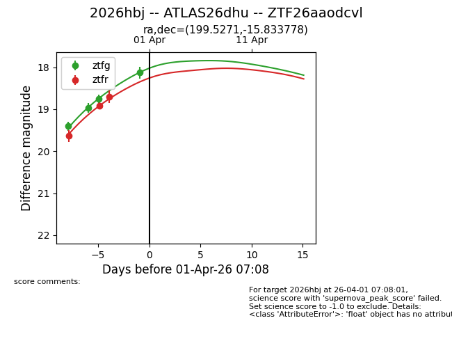
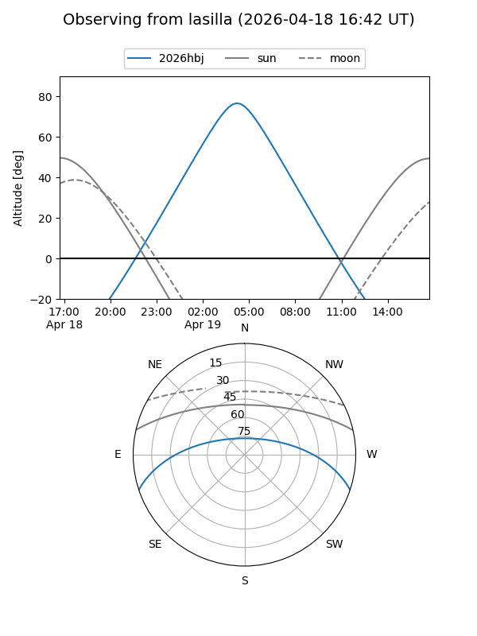
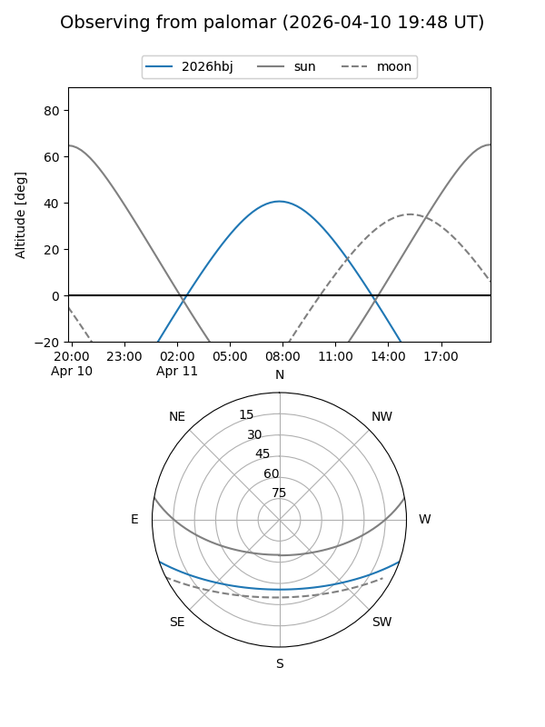
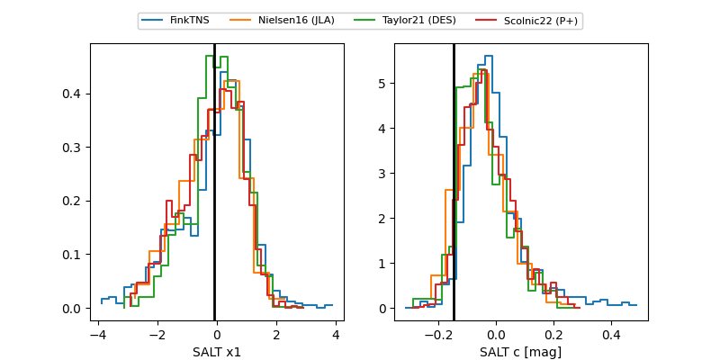

2026hbj
Target 2026hbj at 2026-04-01 07:11
Aliases and brokers:
FINK: link
Lasair: link
ALeRCE: link
TNS: link
YSE: link
alt names
ZTF26aaodcvl (ztf,fink_ztf)
2026hbj (tns,yse)
ATLAS26dhu (atlas)
Coordinates:
equatorial (ra, dec) = 199.5271,-15.83378
equatorial (HMS+DMS) = 13:18:06.52,-15:50:01.60
galactic (l, b) = (312.2803,+46.55329)
Flags:
Photometry:
last ztfg=18.13, ztfr=18.70
4 ztfg, 3 ztfr detections
Lightcurve

Visibility


Additional plots
